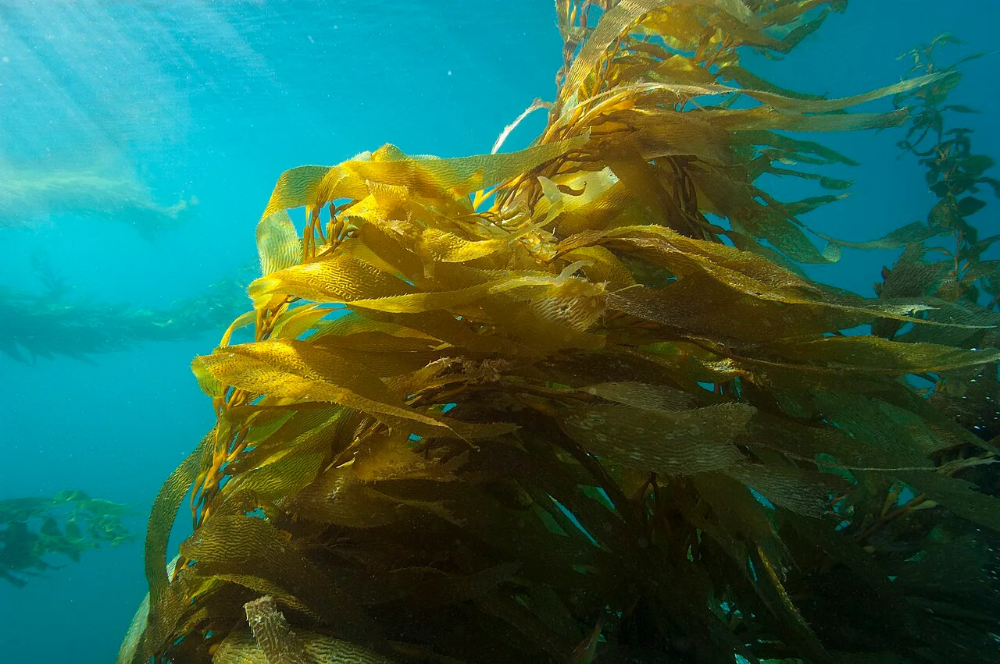
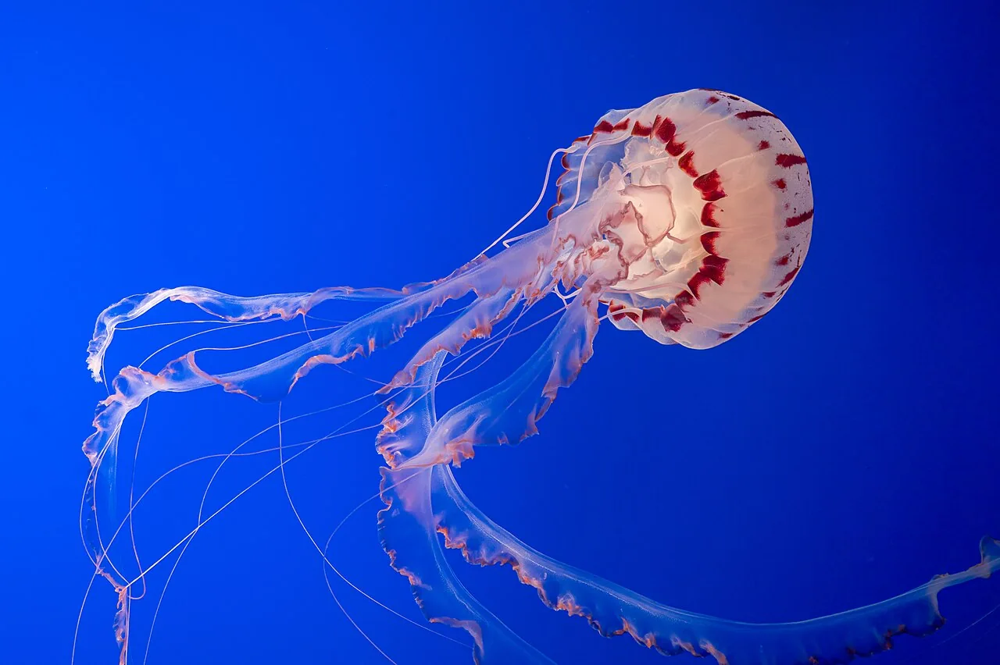
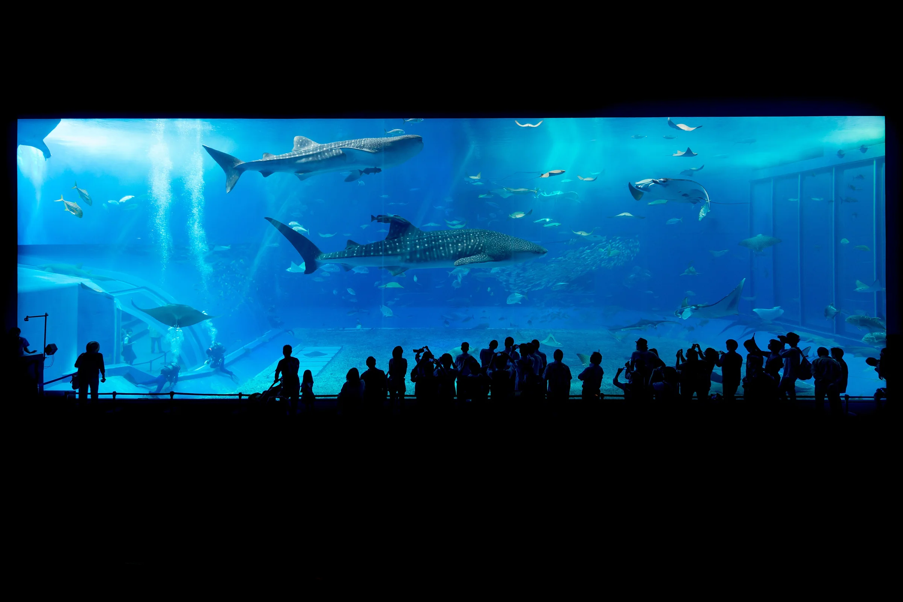

Свет здесь
умеет плавать.
От зарослей у берега до большого панорамного зала. Три остановки, чтобы вглядеться в жизнь под водой.
Начать маршрутТри остановки
под водой
Начни у берега, задержись у медуз и закончи прогулку в панорамном зале.
-

Лес водорослей
Подними взгляд к свету и проследи, как течение раскачивает длинные ленты ламинарии.
- Глубина: 4 метра
- Температура: +10°C
- Остановка 1 из 3
-

Зал медуз
Выбери одну медузу взглядом. Видно, как сокращается её купол и как щупальца тянутся за ним.
- Глубина: 12 м
- Подсветка: био-спектр
- Остановка 2 из 3
-

Панорамный зал
Здесь удобно смотреть издалека. Так легче увидеть, как меняется строй стаи и как движется скат.
- Глубина: 25 м
- Обзор: 270 градусов
- Остановка 3 из 3
Атлас обитателей

Пятнистый
орляк
Когда орляк разворачивается, на его тёмной спине видны белые пятна. Широкие грудные плавники движутся как крылья.
Фото и 3D орляка
Пурпурнополосая
медуза
Светлый купол пересекают пурпурные полосы. Под ним тянутся тонкие, почти прозрачные щупальца.
О медузе
Полосатый
морской конёк
Конёк обвивает растения цепким хвостом. В толще воды его ведёт небольшой спинной плавник.
О морском коньке